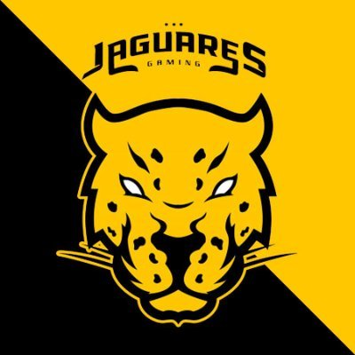

Quem sou eu
Meu nome é Felipe de Vitta Leal, tenho 18 anos e sou estudante de Ciência da Computação da PUC MINAS. Nasci em Belo Horizonte e estudei no Colégio Santa Doroteia
Sempre fui muito chegado a computadores, jogos, edição de vídeos e fotos, e sempre fui muito curioso para saber como a tecnologia funciona. Atualmente jogo Rocket League profissionalmente e represento uma organização chamada Jaguares Gaming.
Além de usar computadores e jogar jogos, gosto muito de praticar esportes e fazer caminhadas. E, para trabalhar nessa área da computação, eu considero muito importante praticar esportes e realizar atividades físicas para não ceder ao sedentarismo e problemas relacionados.
Por que escolhi fazer esse curso
Desde criança uso computadores e sempre foi algo que eu curti muito fazer. Já tive canais no Youtube e passava horas editando e gravando vídeos, em frente ao computador, e percebia que isso era realmente algo que me ocupava muito e eu nem percebia o tempo passar.
Além disso tudo, sempre me identifiquei e me destaquei mais em matérias de exatas no colégio. Nunca gostei de ler ou escrever, e tinha muita preguiça de fazer essas coisas. E apesar de gostar de trabalhar em equipe, sou uma pessoa que tambem gosta de trabalhar sozinho e tranquilo, fazendo minhas coisas sem depender muito dos outros.
No terceiro ano do ensino médio eu comecei a aprender a fazer jogos em Java, e foi ai que percebi que programar era algo que eu gostava muito.
Meu pai, André Cordeiro Leal, professor de direito da PUC, sempre me falou muito bem da universidade, e isso me deixou muito interessado para conhecê-la.
O que estou achando do curso
Até agora o curso me impressionou muito. Aprendi coisas que achei que aprenderia nos períodos mais a frente, e percebi que pela quantidade de coisas novas que aprendi apenas no primeiro periodo, até o oitavo vou ter um conhecimento invejável. As matérias que mais me interessei é Algoritmo e estrutura de dados e Desenvolvimento de interfaces web, e foram elas que me introduziram ao mundo da programação.
Minhas redes socias
Direitos reservados - Copyright 2021